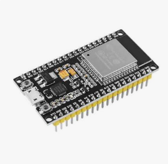
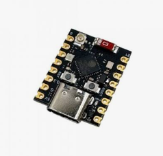

ESP32 · OPEN SOURCE · HOME MINING
Ha•Kou
Ha•Kou
NerdOS
Small power. Big future.
An open-source system that turns ESP32 boards into home mining nodes with a real dashboard, captive setup, fleet tools and OTA updates.
● NERDOS ONLINEESP32 READYOPEN SOURCE
CHAPPĪAI PRESENCE // チャッピー
CAPTIVE PORTAL
From first power-on to mining.
This walkthrough follows the real provisioning flow in Ha•Kou NerdOS v2.3.3-beta, including the customized screen shown while the board joins your Wi‑Fi.
Ha•Kou NerdOS192.168.4.1
Ha-Kou NerdOSWi-Fi and mining configuration
Interactive website demo — nothing is sent or saved.
Ha-Kou NerdOSCONNECTING TO YOUR NETWORK
Saving configuration...
The board is joining the selected Wi‑Fi network.
Wait a few seconds, then locate the new IP address in your router.
The router hostname will use the configured Worker.
ROUTER HOSTNAMEWorker01→ 192.168.1.84
You can also try hakou-<worker>.local.
INTERACTIVE DEMO
See NerdOS operating before you install it.
A simulated dashboard with fictitious telemetry. It reproduces the feel of the system without connecting to a real miner, wallet or pool.
SHARE DATA STREAMLIVE
MINER STATUSONLINE
- Pool
- eu.digi.examplepool.io:3337
- Worker
- Worker01
- Uptime
- 02:14:08
- Firmware
- v2.3.3-beta
TEMPERATURE HISTORYLAST 60 MIN
All names, addresses and telemetry in this demo are fictitious.
OTA Firmware Update
Select a compiled firmware .bin and update NerdOS through the browser.
HaKou-NerdOS-v2.3.3.binREADY
Demo only. No firmware will be uploaded.
↗
Pool shortcut follows the user's configuration.
In the real NerdOS, this action opens the website corresponding to the configured pool. The public website demo does not force or recommend a specific pool.
CONFIGURED STRATUMeu.digi.examplepool.io:3337→ examplepool.io
REAL NERDOS UI
The actual screens, not concept art.
Browse the real Home, Fleet, Configuration and OTA screens supplied from the current project build.
SUPPORTED HARDWARE
Tiny boards. Full NerdOS experience.
The project is built around affordable ESP32 hardware, keeping the system accessible, hackable and easy to deploy at home.

DEVKIT
ESP32 DevKit
The reference platform used throughout Ha•Kou NerdOS development and home mining deployments.
Wi‑FiESP32NerdOS

COMPACT
ESP32-C3 Super Mini
A compact board for smaller installations while keeping the same monitoring and configuration philosophy.
Wi‑FiRISC‑VNerdOS
IN DEVELOPMENT
A physical home for NerdOS.
The dedicated ESP32 DevKit enclosure is being refined around practical use: simple assembly, USB access, BOOT/RESET access and ventilation.
USBBOOT / RESETVentilation3D print
MEET チャッピー
Chappī is the presence behind the system.
The official gray alien represents the human + AI collaboration behind Ha•Kou. Its visual language stays technical, futuristic and aimed at adult technology enthusiasts.
Human + AI building, testing and learning together.
CHAPPĪ / チャッピー